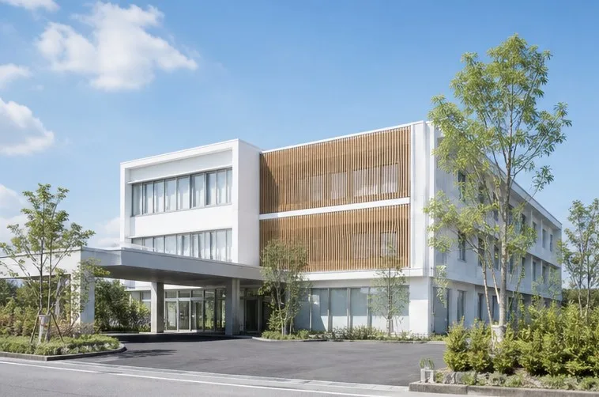
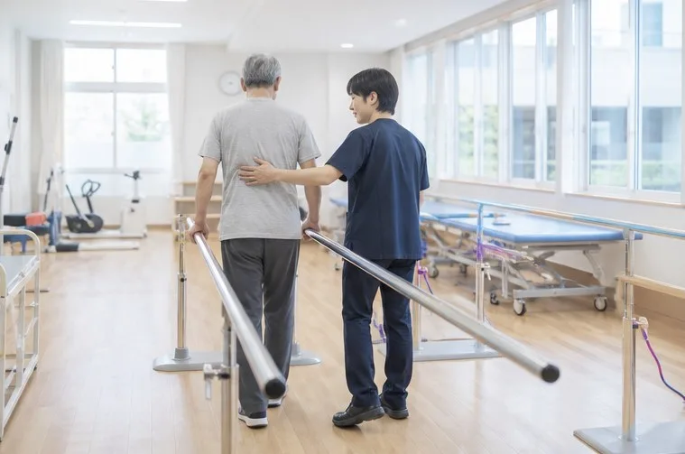

救急から回復期、慢性期まで。4つの病院と8つの診療所が、症状と時期に合わせて連携します。

#01
医療法人社団 灯野会
灯野中央病院
静岡市清水区
救急急性期地域包括ケア病棟人間ドック透析
グループの出発点となった病院です。24時間の救急受け入れと、手術・入院治療を担います。地域包括ケア病棟では、急性期の治療を終えた方が自宅へ戻る準備を整えます。
| 所在地 | 〒424-0899 静岡市清水区灯野町2-14-1 |
|---|
| 電話 | 054-099-2700 |
|---|
| 病床数 | 312床（うち地域包括ケア病棟48床） |
|---|
| 主な診療科 | 内科・消化器内科・循環器内科・腎臓内科・外科・整形外科・泌尿器科・眼科・皮膚科・リハビリテーション科・放射線科・麻酔科 |
|---|
| 外来受付 | 月〜金 8:00〜11:30／13:00〜16:00（午後は予約制の科があります）
土 8:00〜11:00 |
|---|
| 救急 | 24時間受け入れ（来院前にお電話ください） |
|---|
| アクセス | 清水駅前から送迎バスで約15分／駐車場220台 |
|---|
#02
医療法人社団 灯野会
灯野みなと総合病院
静岡市駿河区
救急高度急性期急性期心臓血管センター健診
グループでもっとも大きな総合病院です。心臓や脳の病気、重いけがなど、急いで専門的な治療が必要な方を受け入れます。2026年9月に心臓血管センターを開設しました。
| 所在地 | 〒422-8099 静岡市駿河区灯野浜3-1-1 |
|---|
| 電話 | 054-099-2800 |
|---|
| 病床数 | 418床 |
|---|
| 主な診療科 | 総合内科・循環器内科・心臓血管外科・脳神経内科・脳神経外科・呼吸器内科・消化器内科・外科・整形外科・産婦人科・小児科・救急科・放射線科・麻酔科 |
|---|
| 外来受付 | 月〜金 8:00〜11:00（紹介・予約制の科があります）
紹介状をお持ちでない方は、初診時に選定療養費（保険外のご負担）をいただく場合があります |
|---|
| 救急 | 24時間受け入れ |
|---|
| アクセス | 静岡駅南口から送迎バスで約20分／駐車場340台 |
|---|

#03
医療法人社団 湊坂会
丘の上リハビリテーション病院
静岡市葵区
回復期リハ病棟訪問リハ通所リハ外来リハ
脳卒中や骨折の手術のあと、自宅での生活に戻るためのリハビリに取り組む病院です。理学療法士・作業療法士・言語聴覚士が、病棟の生活そのものを練習の場にして関わります。
| 所在地 | 〒420-0899 静岡市葵区あかり丘2-5-10 |
|---|
| 電話 | 054-099-2900 |
|---|
| 病床数 | 160床（回復期リハビリテーション病棟） |
|---|
| 主な診療科 | リハビリテーション科・内科・整形外科・脳神経内科 |
|---|
| 外来受付 | 月〜土 9:00〜16:30（外来リハビリは予約制） |
|---|
| 入院のご相談 | 主に急性期病院からの転院をお受けしています。地域連携室へご相談ください |
|---|
| アクセス | 静岡駅北口から送迎バスで約25分／駐車場120台 |
|---|
#04
医療法人社団 湊坂会
灯野さくら台病院
焼津市
慢性期療養病棟入院透析訪問診療訪問看護
長く医療的なケアが必要な方が、落ち着いて過ごせる療養病棟の病院です。透析を受けながらの入院にも対応し、退院後は訪問診療と訪問看護で自宅での療養を支えます。
| 所在地 | 〒425-0099 焼津市湊坂4-6-2 |
|---|
| 電話 | 054-099-3000 |
|---|
| 病床数 | 120床（療養病棟） |
|---|
| 主な診療科 | 内科・腎臓内科・リハビリテーション科 |
|---|
| 外来受付 | 月〜金 8:30〜11:30／13:30〜16:00 |
|---|
| 在宅医療 | 焼津市内と周辺への訪問診療・訪問看護（併設の訪問看護ステーション） |
|---|
| アクセス | 焼津駅から送迎バスで約15分／駐車場80台 |
|---|
診療所（8施設）
- 灯野クリニック 清水駅前静岡市清水区内科・小児科
- 灯野クリニック 三保静岡市清水区内科・訪問診療
- 灯野クリニック 草薙静岡市清水区内科・糖尿病内科
- 灯野みなと透析クリニック静岡市駿河区人工透析（夜間透析あり）
- 灯野整形外科クリニック 静岡駅南静岡市駿河区整形外科・リハビリテーション科
- 灯野こどもクリニック 丘の上静岡市葵区小児科・予防接種・乳幼児健診
- 灯野在宅クリニック 葵静岡市葵区訪問診療
- 灯野クリニック 焼津焼津市内科・腎臓内科
※ 診療所の診療時間と休診日は、それぞれの診療所によって異なります。受診の前にお電話でご確認ください。